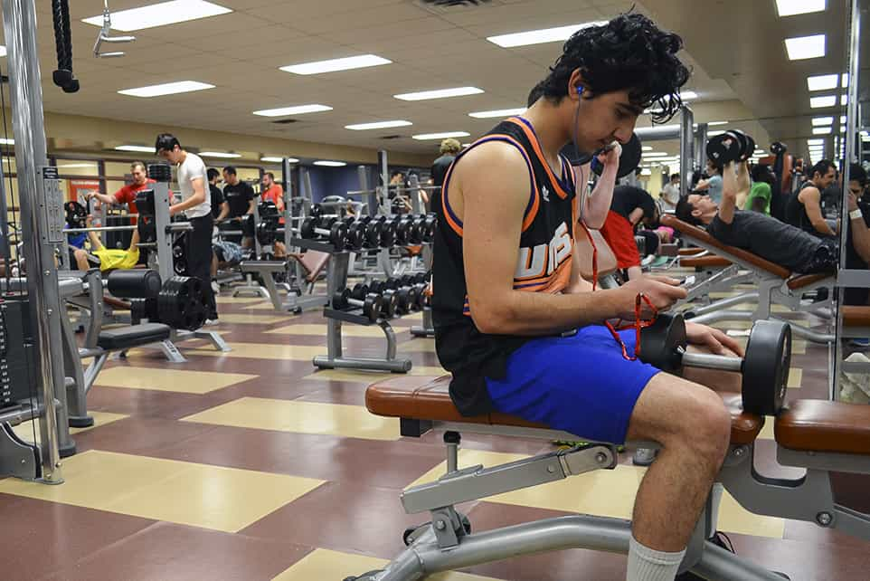
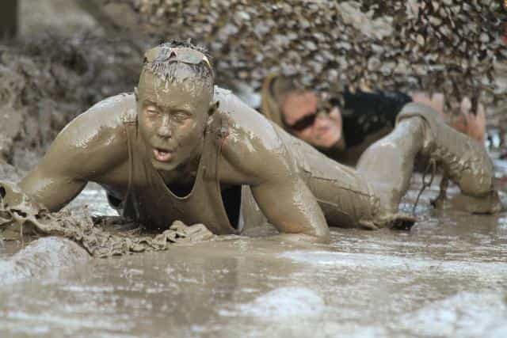
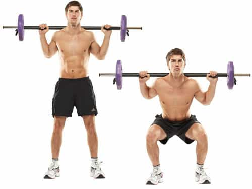

My Name is Reda El, entrepreneur, and fitness fanatic for 8 years, and also BJJ blue Belt, I've gathered both my experience and the information I've read throughout these years on my website Shredded Physique .


Over the last decade or so, obstacle course races and endurance events have gained popularity, with more people now signing up to take part in these events than ever before. On top of that, we all know how popular marathons are, and have been for so many years now, so the number of people taking part in marathons each year is also rising pretty sharply.
The main issue with marathons, obstacle courses, and any other type of endurance race or sport for that matter, is the fact that you need to be extremely physically fit in order to complete the race safely, and hopefully record a respectable time in the process. For these reasons, people often wonder how to increase endurance safely and effectively, and if you’re one of these people, make sure you read on as we’ll be providing an answer to that very question.
In reality, improving your endurance and your stamina is beneficial for a number of different reasons, and it is certainly about much more than simply running a race. By improving your endurance, you can potentially improve your entire life, so it is certainly well worth knowing what you’re doing, and how it can be done.
To make your life easier, and healthier, here is a look at 6 helpful tips based upon how to increase endurance.
Most individuals who are regularly involved in sports and fitness, will have days dedicated solely for lifting, and days dedicated solely for cardio, and it is certainly rare that they will combine the two.
Because of this, most people will perform 2 – 3 cardio sessions per week, and 4 – 5 weight lifting sessions per week, which, whilst beneficial, is perhaps not necessarily the most beneficial way of training if you are actively looking to improve your endurance.
Basically, the idea here is that the more muscles you are working per workout, the more endurance and stamina you will be able to build. Also, remember, the heart is a muscle, so by performing cardio, you are actually working a very major muscle group in your body, which in turn, will help ensure that you build plenty of endurance as time goes by.
After performing a weight lifting workout, jump straight into your cardio and see how you get on. You may even wish to combine the two in a type of circuit-based workout, or perhaps even via Crossfit.

When it comes to lifting, in between working sets, most people will rest for anything from 90 seconds, up to 5 minutes in some cases. However, studies have found that, when it comes to increasing your endurance, ideally you should reduce the amount of rest that you take in between working sets.
Ideally you should rest for 30 – 60 seconds max between sets, which will mean sacrificing the weight and using a slightly lighter weight. Don’t worry, however, because by the time you’re done with that exercise, your muscles should be on fire, and you should be struggling to catch your breath.
Again, circuit-based workouts are ideal in this instance, as you will constantly be moving from one exercise to the next, getting very little rest between sets.
Another sure-fire way of helping to boost your stamina and endurance, is to ramp up the intensity levels of your workouts. It doesn’t matter whether you are lifting, playing sports, running, cycling, or anything else, when you are actually working out and training, you should have the intensity of a thousand angry men.
Okay, perhaps that is a little extreme, but if you are calm and quietly coasting through your workout, barely breaking a sweat, something will need to change pretty sharpish, otherwise you simply are not going to get anywhere fast.
Obviously you don’t need to scream the gym down and run around like you’ve been possessed, but you should try to perform each rep/exercise as quickly as you can, making sure to maintain a constant mind-muscle connection for the duration of the exercise. If you feel that an exercise/workout is too easy, find ways of making it harder.

They say that practice makes perfect, and if you’re looking to build and increase your endurance and stamina, you are going to have to ensure that you get plenty of practice when it comes to endurance training and events.
Rather than going for a short jog at a relatively fast speed, why not slow down the pace, pace yourself, and place much more of an emphasis on the distance, rather than the time.
As time goes by, you can consider covering even further distances, or perhaps simply increasing the speed at which you perform the activity at. You can try your hand at cycling, long-distance running, swimming, or even endurance-based gym workouts and exercises.
The bottom line is that, providing you practice endurance events, the more practice you get, the better you will become.
In terms of how to increase endurance, routine is your arch nemesis if you wish to truly test yourself and ramp up the stamina and endurance. After around two weeks of performing the same workout, the human body will quickly adapt to it and you will suddenly find yourself making less and less progress with each passing week, if you choose to attempt to stick to the same routine that is.
So, if you are always cycling a certain route, why not ditch the bike for a few weeks, and go for a leisurely jog, or even for a walk perhaps?
Failing that, you could hop on the treadmill and have a gym-based cardio workout instead, or you may even wish to ditch the aerobic activity altogether for a few weeks, and focus on circuit-training using weights and your own body weight. Studies have found that resistance workouts can be just as effective as aerobic workouts for increasing stamina and endurance, so don’t be afraid to mix things up and try something new that you’ve never tried before.

When it comes to training in the gym, if you’re used to using a lot of machines as opposed to free weights, again, you may wish to switch things up and to try something new instead.
Most exercise machines will allow you to perform what is known as ‘isolation exercises’ due to the fact that, due to their construction and design, these machines work perfectly at isolating specific muscle groups and body parts. However, for increasing stamina and endurance, research has found that compound explosive movements could be far more beneficial, as they result in a greater energy expenditure.
Compound exercises/movements, are exercises and movements that target multiple muscle groups and parts of the body at once. Standing military presses, for example, are great examples of compound exercises because, although they primarily work the deltoids (shoulders) they hit different parts of the deltoid head, plus they work the upper and lower back, and they even engage your core.
By performing exercises which work multiple muscle groups at once, again, your body is working harder because more muscle groups are being used, so your endurance and stamina will begin to increase as time goes by.
Explosive movements, which require you to perform sudden movements to complete the exercise, are also beneficial as they recruit more fast-twitch muscle fibers, which result in increased oxygen transportation, resulting in greater endurance levels.
For anybody wondering how to increase endurance, explosive compound exercises and movements are vital.
Read More: Helpful Tips For Men Who Want To Take Their First Overseas Trip